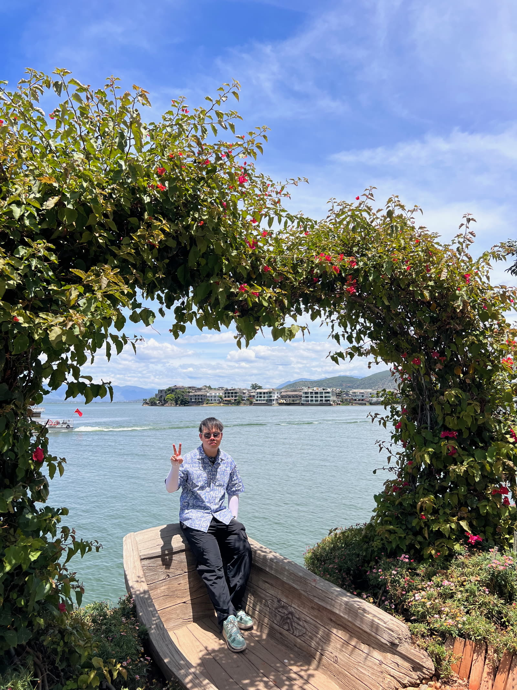
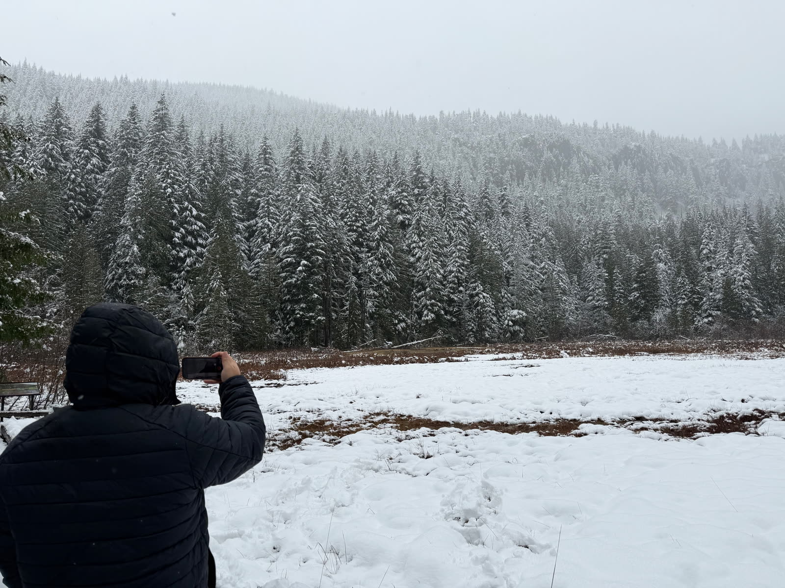

Data analyst by training. Builder by instinct. I teach machines the boring parts, then go outside to collect light. 科班出身的数据分析师，骨子里更爱造东西。我把无聊的活儿教给机器，然后出门收集光。
Who's writing这是谁
I'm Jinhao — from Zhejiang, China, now a graduate student in Information Management at the University of Washington, Seattle. 我是锦豪，浙江人，现在在华盛顿大学读信息管理硕士，人在西雅图。
By day I live in SQL, Python, and dashboards — turning messy operational data into things teams can act on. The rest of the time I'm building small tools to automate my own life, getting a little too obsessed with AI agents, and chasing good light with a camera. This site is the human half. The work half lives on my résumé. 白天我泡在 SQL、Python 和各种看板里，把杂乱的业务数据变成团队真正能用的东西。其余时间，我在写一些自动化自己生活的小工具，对 AI agent 有点上头，再背着相机去追光。这个站是「人」的那一半，「工作」的那一半放在简历里。
Things I build在造的东西
I'm a little obsessed with AI agents. I build tools for an audience of one — me — and open-source the ones that survive. 我对 AI agent 有点着迷。我做的工具往往只有一个用户——我自己——其中活下来的，就开源出去。
idlebell
Open Source开源A tiny daemon that rings when your AI coding agents go idle — so you can run a fleet of them without babysitting terminals.一个小守护进程：当你的 AI 编程 agent 闲下来时响铃，于是你能同时跑一群 agent，而不用一直盯着终端。
Hermes
Personal自用My private "life OS" — a 24/7 hub that reads my feeds, files my newsletters, and ships me a morning briefing before I'm awake.我的私人「生活操作系统」——一个 7×24 的中枢，替我读资讯、归类邮件，在我醒来前把当天的晨报送到。
AgentDeck
Personal自用A TweetDeck-style command center for terminals — many AI agents, side by side in columns, each its own live shell.一个 TweetDeck 风格的终端指挥台——多个 AI agent 并排成列，每一列都是独立的实时 shell。
The Data Stack数据栈
Craft本行The day job, sharpened: automated reporting pipelines, real-time monitoring bots, and dashboards that answer questions before they're asked.把本行打磨锋利：自动化报表管道、实时监控机器人，以及在问题被提出前就给出答案的看板。
Field Notes行迹
Trailheads, harbors, deserts, night skies. The frames I keep coming back to. 山径、海港、沙漠、夜空。那些我总会回头看的画面。


「The best datasets and the best views share one thing: you have to hike to them.最好的数据和最好的风景有个共同点——都得自己走过去。」





「From a glacier lake to a desert in the same year — I just like being where the air changes.同一年里，从冰川湖走到沙漠——我大概只是喜欢待在空气会变的地方。」


